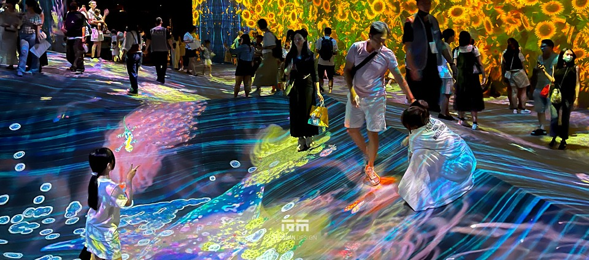
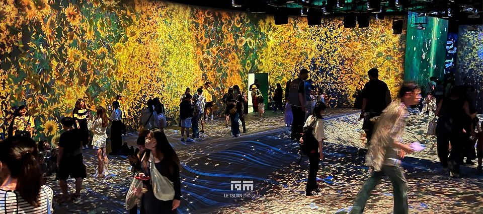
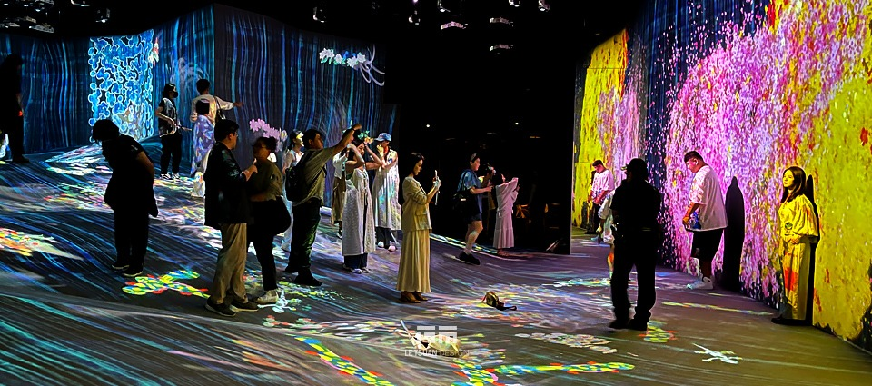
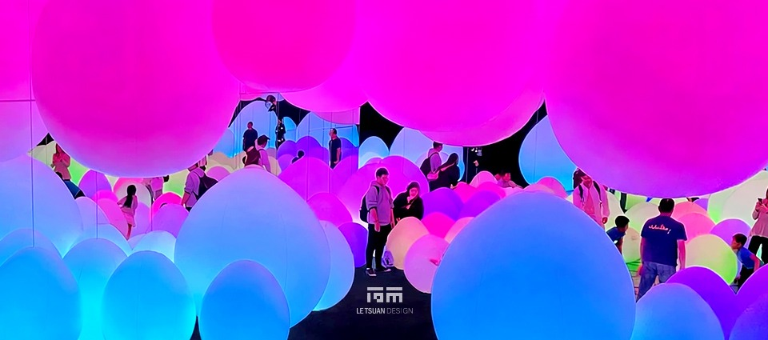
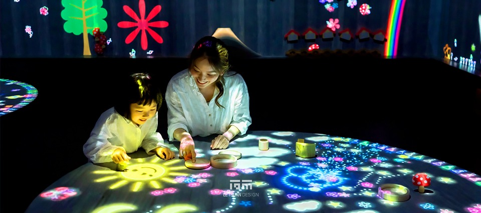
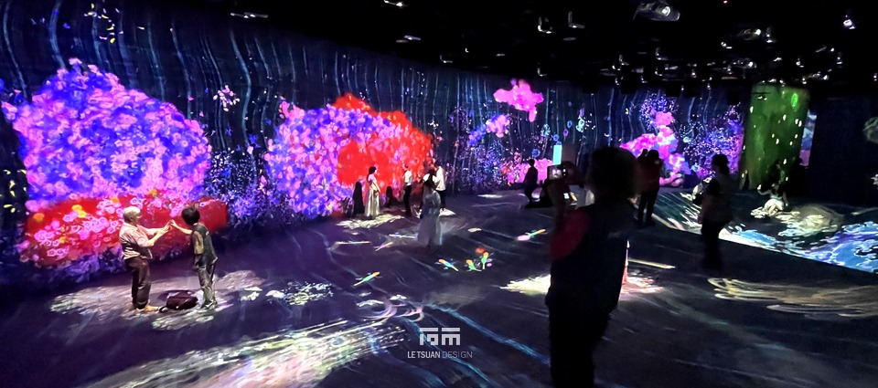
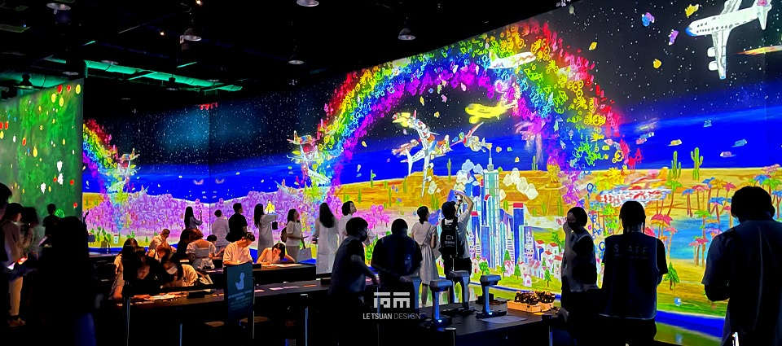
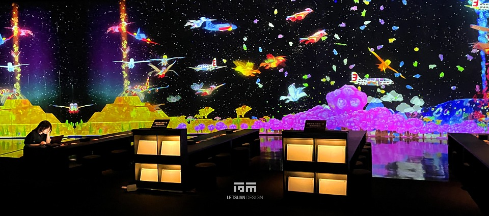
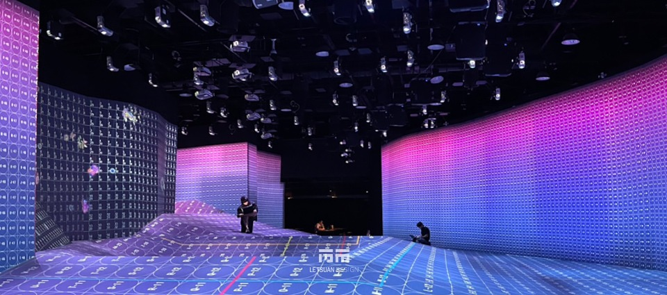
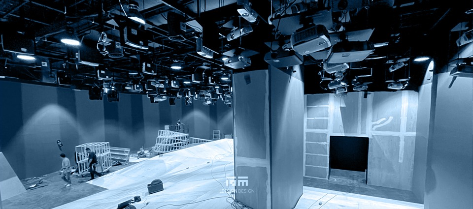

不只是展覽–
你就是藝術的一部分！ 走進呼吸中的光影魔幻宇宙
不是牆在動，是風在動｜1,785㎡・178台投影機・14天進場的排查實錄
臺灣科學教育館七樓，南側特展區。原本安靜的樓層，在14天內被徹底改造成一座會呼吸的森林–鼓動山谷裡的生物在你踩過的足跡旁甦醒，光球隨著滾動聲部彼此呼應，滑梯上的水果乘著孩子們的笑聲飛散。teamLab Future Park臺北站在這裡展開，而在觀眾看不見的地方，是一整層樓的樓板、衍架、電力與光線，被重新計算過無數次。
這是一個1,785.126㎡的場域，全區裝設了178台投影機，加上後台融合處理器、無線基地台（AP）與電腦終端設備，共同織成一張即時反應觀眾行為的感知網。我們負責空間規劃、施工圖繪製，並擔任工程單位執行現場一切工程需求–從進場的第一天，到展覽結束後7天內完成的拆除清運，全程參與。
在不能鑽孔的樓層裡，把一座樂園吊起來
這套系統對精準度要求極高：大量投影機須進行重疊融合，畫面對位的容許誤差極小–尤其現場設備型號較舊、已歷經多年使用，要在老舊硬體上做出符合國際規格的融合效果，本身就是一場精密的平衡。而這套系統要能運作，得先靠一整套看不見的骨架撐起來。
投影機、喇叭、感應器懸吊於8樓樓板下方的衍架，178台設備的重量不能靠猜的–我們以特製螺桿與板材，將每一項設備的荷重精算後分散固定於衍架結構，完工後各節點荷重維持穩定，沒有一台設備下垂或鬆動。腳下的高架地板同樣暗藏挑戰：部分區域架高達2.5m，在這樣的高度與跨距下，我們以加密支架搭配補強鋼構材料重新強化結構，同時把線路管理配置進地板夾層裡，讓承重與線路維護能夠並存。
牆，是另一道題。展場大多數牆面高達6米，卻不允許任何鑽孔、鎖固–這裡是公有場館，原始結構不能有一絲破壞的痕跡。我們改採結構搭接工法，把隔間與支撐結構綑綁固定於後方原有結構體上，完工後現場勘驗，牆面依然完好如初。這套非破壞性搭接工法，後來也成了我們評估其他歷史場館或不可施工公有建築案件時的標準解法。
展場兩側是弧形落地玻璃窗，出入口與賣店也緊鄰明亮空間–而互動投影對環境光極為敏感，任何一絲外部光線滲入都可能讓感測系統誤判。我們逐一針對玻璃窗與動線做阻光處理，在維持逃生動線的前提下，把整層樓調成一座暗場。178台投影機加上融合器、AP與電腦終端同時運作，總用電需求遠超一般展場，我們重新配置電力系統，部分迴路更採用海巴龍（Hypalon）電纜–耐磨、耐候、耐高溫又柔韌，撐得住線路在衍架與高架地板間反覆彎折的日常。14天，這一切都得同步完成。
不是牆在動，是風在動
開展之後，真正的挑戰才開始。
融合精度高的系統，禁不起一點點干擾–展期間，投影畫面開始出現偏移，現場一度懷疑是牆體位移。我們沒有急著下結論，而是在牆面裝上位移感知器，做記號，每天派人到場記錄。數據一天天累積，答案卻愈來愈清楚：牆，沒有動。
問題不在牆上，那就得從投影機本身找起。我們加裝了陀螺儀感測器，每日發送訊號紀錄，長期追蹤投影機本體的微幅晃動，逐區比對哪些區域特別容易偏移。線索慢慢拼起來–問題集中在夏季展期、人潮最多的時段。答案最後出乎意料地簡單：現場人員為了讓觀眾舒服一點，把空調風量開到最大。出風口雖然已經避開投影機機身，但增強的氣流風壓，還是讓投影機產生了肉眼難察覺的晃動，融合畫面就錯位了。
我們沒有調降風量–那等於是犧牲觀展舒適度來換取畫面穩定。真正的解法，是把出風導管重新包覆、收緊路徑，讓氣流被引導著離開投影機周邊，而不是直接撲上去。風量維持原樣，投影機卻不再被吹得晃動，畫面偏移問題就此排除。後續展期間的維護，變成另一件事–遊客使用裝置過程中難免的耗損與碰撞，我們不定期進場檢修，這跟前面那場「風的偵探故事」，是兩碼子事。
另一條線索也曾讓人頭疼：部分區域的HDMI晶片陸續燒毀。追根究柢，是現場配線把訊號線與電源線全綑在一起，加上部分區段用超長HDMI線材硬撐長距離傳輸，而非透過訊號延伸設備轉換–累積的靜電，擊毀了線材裡的晶片；電腦終端設備原本只是放在鐵網置物架上，沒有任何絕緣。我們在設備下方加裝絕緣墊，這個問題，自此減少了。
藏在角度裡的痛感
不是所有問題都寫在藍圖上。展期間，「滑梯水果園」陸續有訪客反映滑落時的頓撞感，甚至有人提出醫學診斷證明。我們評估後發現，是原始滑道角度設計不良所致–這不是能迴避的小事。我們協助日方技術團隊提出修正後的滑道角度調整方案，趁休館日進場改裝，重新調整落地緩衝。改裝之後，再也沒有收到類似反映。
沒有一件事，是一個人能扛下來的
這些排查沒有一件是關起門來自己想通的。牆體位移的懷疑，是我們團隊一直盯著感測數據，一格一格對出來的；樓板荷重與電力容量，每一次調整都得先跟科教館工務單位確認過場館的結構極限；玻璃窗阻光施作動了逃生動線，也得請消防單位到場覆核，才敢真正封起來。展覽能撐過整個展期，靠的從來不是單一團隊的判斷，而是每次卡關時，願意一起把數據攤開來看的人。
七天，讓一切回到原點
展覽落幕，178台投影機、融合器、AP、電腦終端、感應裝置、整套衍架吊掛系統、高架地板結構補強與所有隔間牆體，得在7天內完全拆除清運，把場地還原成最初交接時的樣子，銜接館方下一檔展覽的排程。
從14天的高密度進場，到展期數月間一次次把異常追回真正的成因，再到7天內讓一切歸零–這個案子最終留下的，不只是一座曾經運轉過的沉浸式樂園，更是一整套在精準與變數之間反覆校準的方法論。牆沒有動，但我們卻一直在動。









